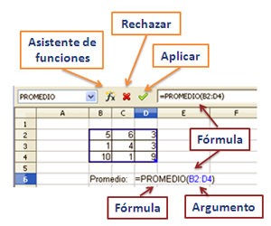

Hojas de cálculo
4. Fórmulas y funciones
Importante
Las funciones y las fórmulas son las expresiones que permiten gestionar automáticamente los miles de datos de una hoja de cálculo:
- Una fórmula es un procedimiento con operadores matemáticos, números, textos, direcciones de celdas, rangos y otras fórmulas, para determinar un valor específico en una celda. Se escriben en la barra de fórmulas y deben empezar con el signo igual (=).
- Una función es una fórmula predefinida por el programa o por el usuario con una sintaxis determinada, que opera con uno o más valores y devuelve un resultado, el cual puede aparecer directamente en la celda o ser utilizado en la fórmula que la contiene.
Los valores sobre los que actúa la función se denominan argumento de la función, y pueden contener un valor numérico o alfanumérico, una dirección de una celda o un rango. Algunas funciones necesitan varios argumentos, en cuyo caso se separan con el carácter punto y coma (;), y otras ni siquiera necesitan argumento.
|
Las fórmulas se escriben en la barra de fórmulas o en la celda activa y comienzan siempre con el signo igual (=). En esta barra de fórmulas existen tres iconos que nos van a permitir aplicar la fórmula, rechazarla y restaurar el valor anterior o iniciar el Asistente para funciones.
|

|
|
Cada función tiene una sintaxis determinada que debe cumplirse para que el programa la identifique. La sintaxis de una función es la siguiente: = nombre_funcion (argumento1; argumento2; ...) |
Comprueba lo aprendido
En la imagen anterior, aparece un ejercicio realizado en OOo Calc. Abre el programa, copia los valores del rango y aplica la fórmula.
Retroalimentación
Falso
El valor que obtenemos es 4,67 que es el promedio del rango seleccionado.Retroalimentación
Verdadero
El rango se nombra con las direcciones de las celdas de las esquinas que lo forman.Retroalimentación
Falso
Cambia el valor de la celda D6, que es el promedio de los valores contenidos en las celdas del rango, pero no la fórmula.Anidación de funciones
Cuando trabajamos con fórmulas, ya sean matemáticas, financieras, lógicas, etcétera, es habitual combinar varias funciones para simplificar los cálculos. La anidación de funciones es una herramienta muy potente en los programas de hojas de cálculo.
El orden de resolución de una función anidada es de dentro hacia fuera, es decir, actuando la función interior como argumento de la función exterior. En este caso, la sintaxis adquiere mayor importancia puesto que algunas funciones pueden tener varios argumentos formados por otras funciones.
Importante
Se denomina anidación de funciones en una hoja de cálculo al uso de una función o varias funciones como argumento de otras.
Comprueba lo aprendido
En los ejercicios de la tarea, tendrás que trabajar con funciones anidadas.
Es por ello que te proponemos que analices las funciones que aparecen a continuación y contestes a las siguientes preguntas.
| 1 |
DÍAS(HOY();01/01/2010) |
| 2 | SUMA(PROMEDIO(A1:A5);B1) |
| 3 | SI(B5=12;"docena";SI(B5=6;"media docena";"nulo")) |
Obra publicada con Licencia Creative Commons Reconocimiento No comercial Compartir igual 4.0